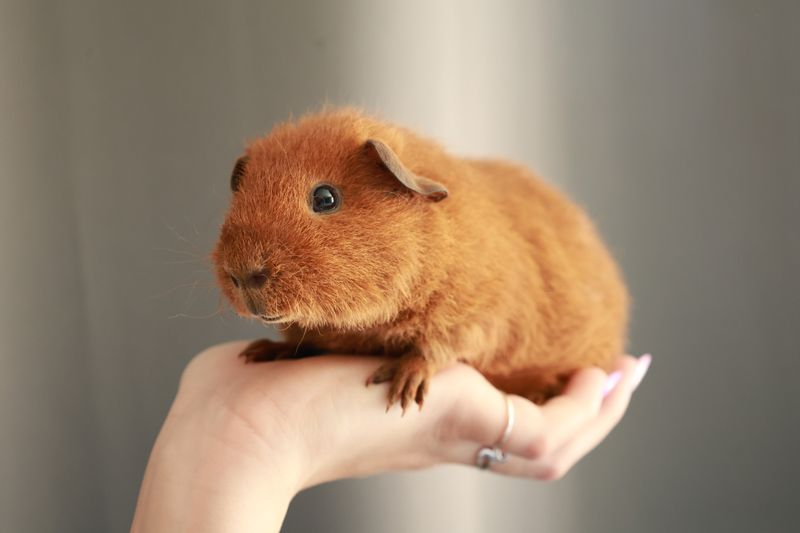
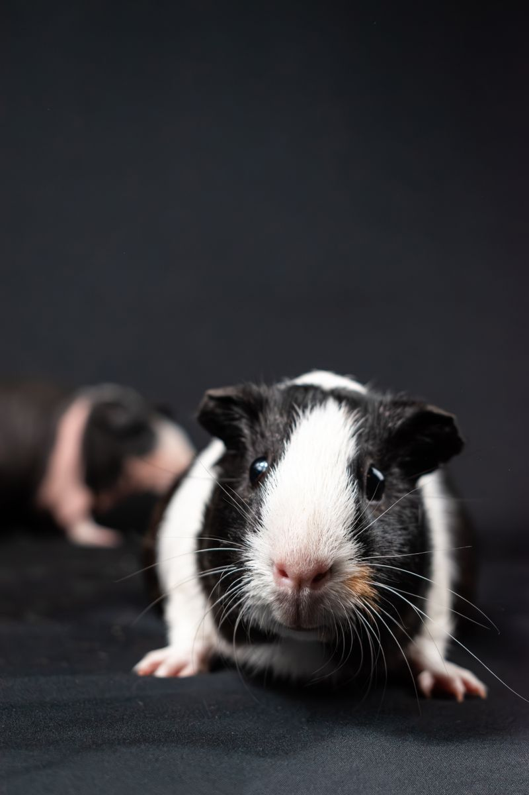

Biscuit
The snack enthusiastGolden fluff, tiny folded ears, and the sweetest little cheeks. Meet our very own little cookie, Biscuit.
Welcome to Kyle’s happy place. A celebration of fuzzy friends, tiny adventures, and the sweetest little wheeks.
Meet the little crew Life is better with a little wheek ♡
Life is better with a little wheek ♡What would you like to learn about today?
Real guinea pigs, with our own playful nicknames.

Golden fluff, tiny folded ears, and the sweetest little cheeks. Meet our very own little cookie, Biscuit.

Bright eyes and orange-and-white fur. Our nickname for this curious-looking little friend is Clover.

A snowy little nose stripe, pink button nose, and whiskers for days. Sending you a tiny Marshmallow hello!
Good-quality grass hay should make up most of a guinea pig’s diet and always be available. Hay is an everyday food, not just a treat!
Offer suitable leafy greens and vegetables daily, including vitamin C-rich foods such as bell pepper. Introduce new foods gradually.
Keep clean drinking water available all the time. Add a small daily portion of guinea pig pellets; follow the feeding directions for your pet.
Learn more: RSPCA guinea pig feeding guide.
A roomy enclosure lets guinea pigs explore, exercise, and rest. Leave open floor space between their food and hideaways.
Keep their home dry, well ventilated, and protected from extreme temperatures. Give them a quiet, secure place to relax.
Provide enough safe hiding places for every guinea pig. Keep bedding clean and dry, and remove soiled areas regularly.
Learn more: RSPCA housing guide.
Offer roomy, guinea pig-safe tunnels to explore. Make sure your guinea pigs can move through them easily.
Fresh hay makes an interesting place to investigate as well as a meal. Give your explorers opportunities to forage.
Spend quiet time nearby and let them approach. Safe chew toys and friendly guinea pig companions make life more interesting.
Learn more: RSPCA play and behaviour guide.
The famous “wheek” is just one guinea pig sound. Spend time listening to your friends and noticing what is happening around them.
A sound tells only part of the story. Notice their posture, movement, and whether they choose to approach or hide.
Use a quiet voice and let them retreat when they want. Learning each guinea pig’s usual behaviour helps you notice changes.
Learn more: Understanding guinea pig behaviour.
When guinea pigs get excited, they sometimes hop into the air. It’s called “popcorning”!
Fresh grass hay is an everyday essential for guinea pigs. Keep it plentiful, alongside fresh water.
A roomy, safe home with cozy hideaways and tunnels makes space for exploring and resting.
Guinea pigs are social animals. Compatible guinea pig companions help keep each other company.
Real guinea pig photos from Pexels. Nicknames and character descriptions are for fun; these are not Kyle’s pets.
Used under the Pexels license; displayed with cropping to fit the page.